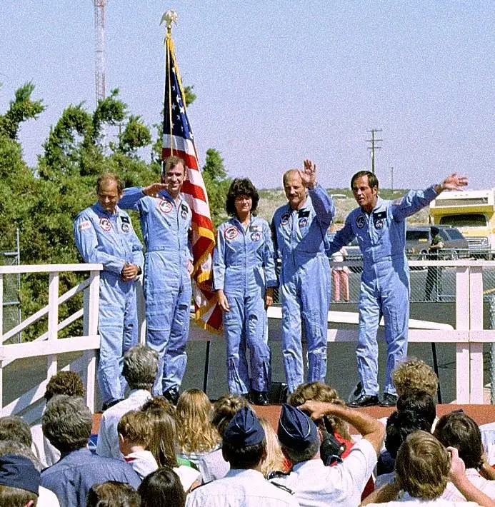
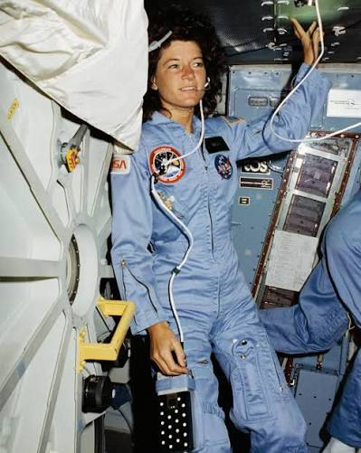

Here are three aspects and works from her life that I admire:
During her first mission (STS-7) aboard the Space Shuttle Challenger, Sally Ride became an expert in using the shuttle's robotic arm. She used it to deploy the first Shuttle Pallet Satellite (SPAS-01) and retrieve it two days later, marking the first time the Shuttle was used to return a spacecraft back to Earth.

After retiring from NASA in 1989 and working as a physics professor, she co-founded Sally Ride Science in 2001 with her partner Tam O'Shaughnessy and colleagues. This company was designed to promote STEM (Science, Technology, Engineering, and Math) education and encourage girls and young students to pursue these careers.
As a physicist who had flown twice on Challenger, she quietly helped track down and supply critical technical data regarding how cold temperatures caused the solid rocket booster's rubber O-rings to fail. She discreetly shared O-ring and launch-temperature records to protect her sources inside NASA from retaliation.
